카테고리 제작 목적 : 마인크래프트가 유투브 컨텐츠 제작 및 새로운 세계관과 관계 모델링을 보여주는 툴로 활용되는 시작점인 지금 창작자 여성들이 다양한 마인크래프트 모드를 쉽게 접하고 활용할 수 있도록 한글로 정보를 제공하여 전체적인 접근도 향상에 기여하는데 그 목적이 있다. 개개의 모드를 상세히 설명하는 하위 문서를 먼저 만든 후 마인크래프트 전체 모드문서를 생성할 예정.
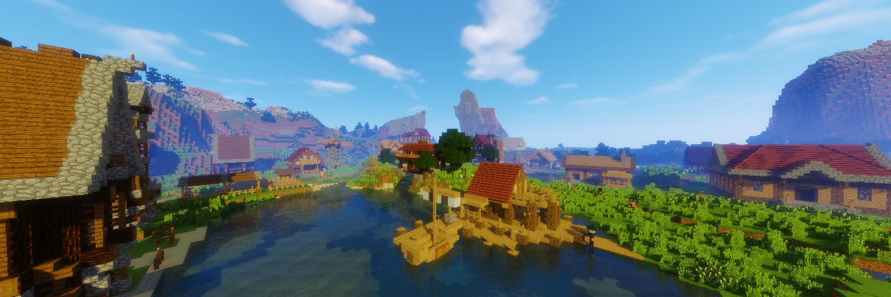
마인크래프트 모더 H3lay가 만든 개척자 모드. 현 버전 1.15까지 지원된다. 보급선/보급캠프에서부터 시작해 새로운 개척지에 마을을 만들고 각종 건물과 시설을 확충하여 npc주민을 늘려나가고 마을을 확장시키는 것이 주요 컨텐츠이다.
이 모드에서 플레이어는 npc 주민들을 보호하고, 집과 직장을 지어주고, 식량을 공급해주고, 각종 몬스터와 침략자로부터 보호해주어야 한다. 따라서 싱글 플레이라면 정착지가 정해져 있고 자원이 충분히 쌓여 있으며 식량 수급에 무리가 없고 기본 몬스터를 잡을 수 있는 무기를 갖춘 중반부 이후에 마을 회관을 짓는 것이 권장된다.
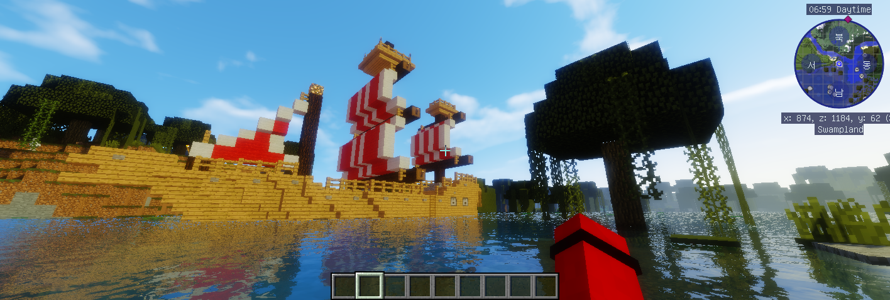
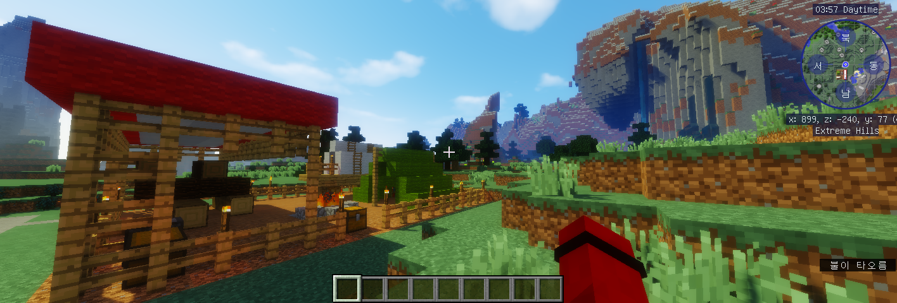
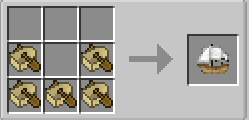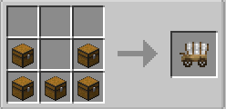
보급선은 큰 배가 뜰 수 있을 만큼1 넓고 깊은 물에 설치할 수 있으며 캠프는 땅에 설치할 수 있다. 보급선 아이템을 들고 땅에 오른쪽 클릭을 하면 건물의 청사진이 뜨는데, 그때 ESC키를 누른 후 건물의 위치와 높낮이를 확인한다. 꽃이나 잔디, 나무 및 튀어나온 지형과 건물이 겹치지 않고 평평한가 확인한 후 위치가 만족스러우면 다시 땅에 오른쪽 클릭을 해 녹색 체크버튼을 누르면 된다. 모르고 지나친 장애물이나 땅의 패인 부분이 있다면 건물이 지어지지 않고 채팅창에 문제되는 부분의 좌표를 알려준다.2 지어진 보급선/보급캠프는 아지트로 활용할 수 있다. 보급선은 선장실에서, 보급캠프는 입구의 상자에서 건축도구(Building tool)와 마을회관 아이템(Town hall)을 얻을 수 있다.
처음으로 마을회관 아이템을 손에 들고 땅을 오른쪽 클릭하면 마을회관을 바로 지을 것인지 건축 도구로 건물의 위치를 확인하고 지을 것인지 물어보는 메세지가 뜬다. 건설 도구로 건물의 위치를 확인한다를 누르면 보급선/보급캠프를 지을 때처럼 건물의 위치와 방향을 조정할 수 있다. 다만 건축부지를 직접 정리하지 않아도 되고3 , 화면 상단의 건축옵션에서 원하는 스타일의 건축양식을 고를 수 있다는 점을 잊지 말자.
보면 건물 청사진이 땅에 한두블럭 묻혀있는 줄 모르고 그냥 지었다가 반지하가 되는 경우가 종종 있는데 항상 +를 눌러서 건물과 땅의 수평이 잘 맞춰졌는지 확인하고 짓는 것이 좋다. 건물의 입구와 입구에 붙은 계단을 기준으로 하면 된다.
| 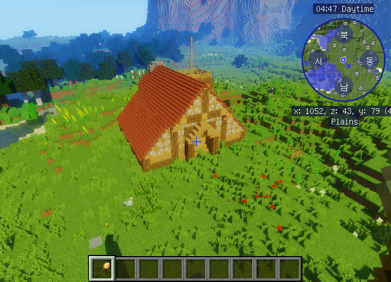 | 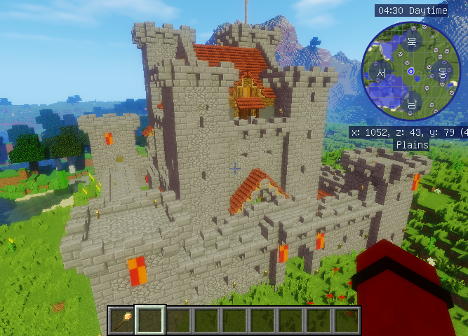 |
| 중세식 참나무(Medieval Oak) 마을회관 레벨1 | 중세식 참나무(Medieval Oak) 마을회관 레벨5 |
마을 회관 아이템을 설치한 후 시간이 약간 흐르면 정착민(Settled)이 도착한다. 마을회관을 가장 먼저 짓거나, 건축가의 오두막을 짓고 난 후 바로 마을회관을 짓는 것을 추천한다. 집이 없는 정착민들은 밤이 되었을 때 마을회관으로 모여 몬스터를 피하기 때문. 설치한 마을 회관 아이템을 오른쪽 클릭한 뒤, 원하는 건축인부를 고르고 마을 회관 아이템을 오른쪽 클릭하여 건축 옵션(Build Options)에 들어가 건물 짓기(Build Building)를 클릭하고 필요한 재료를 보관함에 넣어주면 된다.
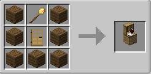
건축가의 오두막 아이템(Builder's Hut)을 만들어 설치한 후, 원하는 건축인부를 고르고 건축가의 오두막 아이템을 오른쪽 클릭하여 건축 옵션(Build Options)에 들어가 건물 짓기(Build Building)를 클릭하고 재료를 넣어주면 설치된다. 건축가의 오두막은 여러 채를 짓거나, 레벨업을 해 건물을 확장하거나, 다른 위치로 이동시켜 재건축을 할수 있다.
건축가를 오른쪽 클릭해 보면 작업에 필요한 재료를 요구하는데, 그 재료들을 건축가의 보관함에 넣어주거나 건축가의 오두막 보관함에 넣어두면 된다. 필요한 재료를 편하게 넣고 싶으면 그 재료를 인벤에 가진 채로 건물 아이템을 오른쪽 클릭한 후 위쪽의 보라색 휘어진 화살표를 클릭하면 나오는 아이템 리스트 오른쪽에 있는 아이템 넣기 버튼을 클릭하면 된다. 필요한 재료가 있으면 건축가의 머리 위에 느낌표가 뜨니 가끔 확인해 주거나, 보관함에 삽, 곡괭이, 도끼와 같은 재료를 미리 넣어두자. 레벨 1 건축가는 나무 도구밖에 쓰지 못하는 점 주의. 가만히 아무것도 안 하고 있는 것 같아도 머리 위에 느낌표가 안 뜨면 아이템을 정리하고 있던지 지하를 파고 있던지 뭔가 일을 하는 것이니 내버려 두면 된다. 보관함이 꽉 차면 일을 하지 못하니 가끔 보관함을 정리해 줘야 한다. 이따끔 보관함에 재료를 넣어 줘도 느낌표를 띄우고 있을 때가 있는데 '상세히 알려주세요'(More detail please)를 누르고 채우기(Fulfill)를 누르면 된다. 밤이 되거나 비가 와 어두워지면 집(없으면 마을회관)으로 가며 해가 나와있을 때만 일한다.
건축가에게 4칸짜리 조합법을 알려주어 스스로 필요한 아이템을 조합해 사용할 수 있게 할 수 있다. 건축가의 오두막을 업그레이드 할때마다 보관함의 갯수가 나무상자 하나만큼 늘어나며, 건축가의 오두막 레벨을 올려야만 다른 건물의 레벨을 올릴 수 있다. 건축가의 오두막은 건축을 할 수 있는 땅의 범위가 한정되어 있다. 이 범위를 벗어난 건물을 건축하려면 그 근방에 새로운 건축가의 오두막을 지은 후, 건축가를 고용하고 건축을 시도해야 한다.
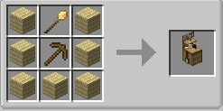4
광산 아이템(Mine)을 만들어 설치한 후, 원하는 광부를 고르고 광산 아이템을 오른쪽 클릭하여 건축 옵션(Build Options)에 들어가 건물 짓기(Build Building)를 클릭하고 재료를 넣어주면 설치된다. 광산은 여러 채를 짓거나, 레벨업을 해 건물을 확장하거나, 다른 위치로 이동시켜 재건축을 할수 있다.
광산을 짓고 광부를 채용하면 사다리와 조약돌(주변에 물이 있는 경우 물을 막기 위함), 그리고 곡괭이를 요구하는데 그걸 주면 광질을 하기 시작한다. 허기가 빨리 닳으니 인벤토리에 먹을 것을 넉넉히 넣어 주자. 광부가 캔 광석과 돌은 광산 보관함에 들어있다. 광부에게 4칸짜리 조합법을 알려주어 스스로 필요한 아이템을 조합해 사용할 수 있게 할 수 있다.
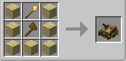5
나무꾼의 오두막(Lumber jack's Hut)을 만들어 설치한 후, 원하는 나무꾼을 고르고 나무꾼의 오두막 아이템을 오른쪽 클릭하여 건축 옵션(Build Options)에 들어가 건물 짓기(Build Building)를 클릭하고 재료를 넣어주면 설치된다. 나무꾼의 오두막은 여러 채를 짓거나, 레벨업을 해 건물을 확장하거나, 다른 위치로 이동시켜 재건축을 할수 있다.
나무꾼의 오두막을 짓고 나무꾼을 채용하면 도끼를 요구하는데, 그걸 주면 주변의 나무를 베기 시작한다. 나무를 벤 자리에는 알아서 묘목까지 심으니, 원하는 나무가 있다면 나무꾼의 오두막 근방에 심어놓으면 된다. 나무꾼이 채집한 나무는 나무꾼의 오두막 보관함에 들어있다.
1.12.2 기준 빠른 잎 제거 모드(Fast leaf decay)와 호환된다.
1.12.2 버전 기준 Spartan Weaponry : Vanilla materials와 호환된다. 나무꾼이 전투도끼로 나무를 베게 할 수 있다.
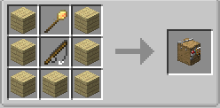
입구 부분이 땅과 이어지도록(혹은 어부의 오두막까지 다리를 놔 준다) 물 위에 어부의 오두막(Fisherman's Hut)을 만들어 설치한 후, 원하는 어부를 고르고 어부의 오두막 아이템을 오른쪽 클릭하여 건축 옵션(Build Options)에 들어가 건물 짓기(Build Building)를 클릭하고 재료를 넣어주면 설치된다. 물 위에 짓는 건물이니만큼 애써 레벨을 올린 건축가가 익사하지 않도록 주의해야 한다. 어부의 오두막은 여러 채를 짓거나, 레벨업을 해 건물을 확장하거나, 다른 위치로 이동시켜 재건축을 할수 있다.
어부의 오두막을 짓고 어부를 채용하면 낚싯대를 요구하는데, 그걸 주면 바로 낚시를 하기 시작한다. 어부가 낚은 생선은 어부의 오두막 보관함에 들어있다. 가끔 어부가 낚시는 안 하고 수영만 하고 있을 때가 있는데, 그 수영하는 지점 아래에 블럭으로 길을 설치해 준 후 낚싯대를 뺏었다가 다시 주면 대부분 해결된다.
1.12.2 버전 기준 Pam의 농업 제작 모드와 호환된다. 어부가 다양한 물고기를 낚게 할 수 있다.
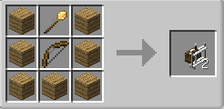
정착민이 4명을 초과할 경우, 때때로 야만인(Barbarian)이 침략해 오기 때문에 이를 방어하기 위해서는 경비탑을 세워야 한다. 경비탑(GuardTower)을 만들어 설치한 후, 원하는 경비를 고르고 경비탑 아이템을 오른쪽 클릭하여 건축 옵션(Build Options)에 들어가 건물 짓기(Build Building)를 클릭하고 재료를 넣어주면 설치된다. 경비탑은 여러 채를 짓거나, 레벨업을 해 건물을 확장하거나, 다른 위치로 이동시켜 재건축을 할수 있다.
경비탑을 짓고 경비를 채용하면 무기와 갑옷을 요구하는데, 그걸 주면 경비를 서기 시작한다. 낮에는 잠을 자고 밤에는 경비를 선다.
1.12.2 버전 기준 Spartan Weaponry : Vanilla materials와 호환된다. 경비가 다양한 무기를 들게 할 수 있다.
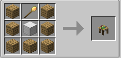
경비탑 레벨이 3이 넘었을 경우, 병영(Barracks)을 만들어 설치한 후, 병영 아이템을 오른쪽 클릭하여 건축 옵션(Build Options)에 들어가 건물 짓기(Build Building)를 클릭하고 재료를 넣어주면 설치된다. 병영은 레벨업을 해 건물을 확장하거나, 다른 위치로 이동시켜 재건축을 할수 있다.
병영을 지으면 병영 탑(Barracks Tower)을 설치할 수 있게 되는데, 병영 탑은 지을 수 있는 위치와 갯수가 정해져 있다. 병영 탑을 짓고 병사를 채용하면 무기와 갑옷을 요구하는데, 그걸 주면 경비를 서기 시작한다. 낮에는 잠을 자고 밤에는 경비를 선다.
1.12.2 버전 기준 Spartan Weaponry : Vanilla materials와 호환된다. 경비가 다양한 무기를 들게 할 수 있다.
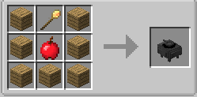
레스토랑(Restaurant)을 만들어 설치한 후, 원하는 요리사를 고르고 레스토랑 아이템을 오른쪽 클릭하여 건축 옵션(Build Options)에 들어가 건물 짓기(Build Building)를 클릭하고 재료를 넣어주면 설치된다. 레스토랑은 여러 채를 짓거나, 레벨업을 해 건물을 확장하거나, 다른 위치로 이동시켜 재건축을 할수 있다.
레스토랑을 짓고 요리사를 채용하면 화덕에 넣을 연료를 요구하는데 레스토랑 아이템을 오른쪽 클릭하고 우측 상단 보라색 화살표를 눌러 연료(Fuel)목록에서 원하는 연료를 ON으로 바꾼 후, 해당 연료를 보관함에 넣으면 된다. 석탄을 그냥 넣는 것보다 석탄블록으로 만들어 넣는 것이 효율이 좋다. 구울 수 있는 음식 아이템을 넣으면 요리사가 화덕에 구워 마을 주민들에게 판매하는 모습을 볼 수 있다. 레스토랑이 생기면 주민들에게 더이상 음식을 따로 넣어 줄 필요가 없으며, 필요할 때 주민들이 레스토랑에 와서 음식을 먹고 간다.
1.12.2 버전 기준 Pam의 농업 제작 모드와 불완전 호환된다. 스튜용 냄비처럼 조리도구가 필요한 조합법의 경우 요리사가 인식하지 못하기 때문에 완전히 만들어진 음식을 넣어주던지, 조리도구가 필요없는 조합법을 가르치고 재료를 넣어주어야 한다. 예를 들어 요리사의 보관함에 스튜용 냄비와 신선한 우유, 튀김옷을 넣어주면 요리사가 반응하지 않지만 도넛과 초콜릿을 넣어주면 요리사가 초콜릿 도넛을 만들어 판매한다.
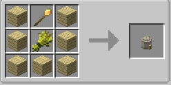
빵집(Bakery)을 만들어 설치한 후, 원하는 제빵사를 고르고 빵집 아이템을 오른쪽 클릭하여 건축 옵션(Build Options)에 들어가 건물 짓기(Build Building)를 클릭하고 재료를 넣어주면 설치된다. 빵집은 여러 채를 짓거나, 레벨업을 해 건물을 확장하거나, 다른 위치로 이동시켜 재건축을 할수 있다.
빵집을 짓고 제빵사를 채용하면 빵집 아이템을 오른쪽 클릭하고 우측 상단 보라색 화살표를 눌러 만들 수 있는 빵 목록에서 원하는 빵을 ON으로 바꾼 후, 해당 재료를 보관함에 넣으면 된다. 음식 조합법은 따로 알려 줄 필요 없다.
1.12.2 버전 기준 Pam의 농업 제작 모드와 호환되지 않는다.
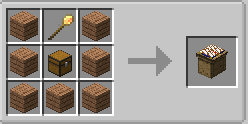
창고(Warehouse)를 만들어 설치한 후, 창고 아이템을 오른쪽 클릭하여 건축 옵션(Build Options)에 들어가 건물 짓기(Build Building)를 클릭하고 재료를 넣어주면 설치된다. 창고는 여러 채를 짓거나, 레벨업을 해 건물을 확장하거나, 다른 위치로 이동시켜 재건축을 할수 있다.
창고를 레벨업하면 아이템을 보관할 수 있는 공간과 선반의 수가 확장된다.
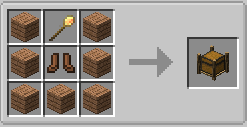6
창고를 만들고 나면 근방에 배달국 건축 추천부지가 생긴다. 반드시 정확히 그곳에 지을 필요는 없고 창고 옆 원하는 곳에 배달국 부지를 지으면 된다. 배달국(Deliveryman) 아이템을 만들어 설치한 후, 원하는 배달부를 고르고 배달국 아이템을 오른쪽 클릭하여 건축 옵션(Build Options)에 들어가 건물 짓기(Build Building)를 클릭하고 재료를 넣어주면 설치된다. 배달국은 여러 채를 짓거나, 레벨업을 해 건물을 확장하거나, 다른 위치로 이동시켜 재건축을 할수 있다.
배달국을 짓고 배달부를 채용하면 배달부가 마을 안을 돌아다니며 각 건물마다 남는 아이템을 모아 창고에 보관하고, 필요한 아이템은 창고에서 건물로 배달한다. 플레이어가 일일히 건물과 npc의 보관함을 비울 필요가 없어진다. 다만 마을이 클 경우 일이 많아 속도가 느려지기 때문에 배달국을 여러 개 짓는 것도 좋다. 배달부는 5명까지 채용할 수 있다.
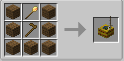7
농장(Farm) 아이템을 만들어 설치한 후, 원하는 농부를 고르고 농장 아이템을 오른쪽 클릭하여 건축 옵션(Build Options)에 들어가 건물 짓기(Build Building)를 클릭하고 재료를 넣어주면 설치된다. 농장은 여러 채를 짓거나, 레벨업을 해 건물을 확장하거나, 다른 위치로 이동시켜 재건축을 할수 있다.
농장을 짓고 농부를 채용하면 농사에 필요한 괭이와 뼛가루(Fertilizer)를 요구하는데, 뼛가루는 작물을 좀 더 빨리 키워낼 때 필요하므로 우선은 괭이만 줘도 된다.8 농장에 붙은 허수아비를 오른쪽 클릭하고 키우고 싶은 씨앗(혹은 종자가 될 작물)을 넣으면 그곳에 키울 작물 종류를 정할 수 있는데, 보관함에 종자로 삼을 작물이나 그 씨앗을 넣어주면 된다.
농부가 멈춰있는 상태로 너무 오래 있다 싶으면 농장 아이템을 오른쪽 클릭한 후 직원 관리(Manage Workers)를 클릭하고 건물 고용 모드(Building Hiring Mode)에서 매뉴얼(Manual)설정으로 맞춘 후 직원 상태를 일시정지(Pause)로 바꾸고 재시작(Restart)을 눌러준다. 그렇게 하면 꼬인 커맨드가 리셋되므로 문제가 뭐였는지 알 수 있다. 다른 npc들의 오류에도 같은 방법으로 대응이 가능하다.
1.12.2 버전 기준 Pam의 농업 제작 모드와 호환되지 않는다. 밀, 감자, 당근 같은 기본 작물만 키운다.
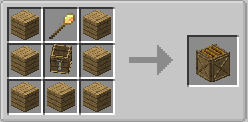
농장 레벨이 3이 넘었을 경우, 비료 오두막(Composter hut) 아이템을 만들어 설치한 후, 원하는 비료 제작자를 고르고 비료 오두막 아이템을 오른쪽 클릭하여 건축 옵션(Build Options)에 들어가 건물 짓기(Build Building)를 클릭하고 재료를 넣어주면 설치된다. 비료 오두막은 여러 채를 짓거나, 레벨업을 해 건물을 확장하거나, 다른 위치로 이동시켜 재건축을 할수 있다.
비료 오두막을 짓고 비료 제작자를 채용하면 비료로 만들 아이템을 요구하는데, 비료 오두막 아이템을 오른쪽 클릭하고 상단 보라색 화살표를 클릭하면 비료로 만들 아이템을 On으로 바꿀 수 있다. 묘목이나 씨앗처럼 남는 아이템을 비료로 넣어주면 통에 넣어 삭히기 시작하는데 그 비료를 작물에 주거나 묘목에 줘서 생장을 빠르게 할 수 있다.
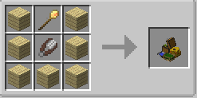
양치기의 오두막(Shepherd's Hut) 아이템을 만들어 설치한 후, 원하는 양치기를 고르고 양치기의 오두막 아이템을 오른쪽 클릭하여 건축 옵션(Build Options)에 들어가 건물 짓기(Build Building)를 클릭하고 재료를 넣어주면 설치된다. 양치기의 오두막은 여러 채를 짓거나, 레벨업을 해 건물을 확장하거나, 다른 위치로 이동시켜 재건축을 할수 있다.
양치기의 오두막을 짓고 양치기를 채용하면 가위와 도끼, 밀을 달라고 한다. 가위로는 양털을 자르고 밀로는 양을 번식시키며 도끼로는 불어난 양을 도축한다. 우리 하나당 번식에 필요한 성체 양 두 마리 이외에는 도축하며, 양치기의 오두막 아이템을 우클릭하여 상단 보라색 화살표로 들어가 양을 랜덤으로 염색시키는 기능을 켜고 염색약을 넣어두면 색깔 양털을 생산할 수 있다.
1.12.2 기준 동물 마니아 모드와 불완전 호환된다. 동물 마니아 모드에서는 양에 암수 구분이 있고 새끼는 성체가 되고 나서야 성별이 결정되는데, 개척자 모드의 양치기는 양 우리 하나당 양 성체 두 마리만 있으면 나머지 양을 도축하고 밀로 번식시키려 하므로, 번식으로 개체를 늘리는 기능은 활용할 수 없고 양털을 자동으로 깎는 기능과 고기를 얻는 기능만 살릴 수 있다.
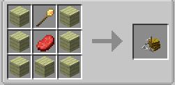
소치기의 오두막(Cowboy's Hut) 아이템을 만들어 설치한 후, 원하는 소치기를 고르고 소치기의 오두막 아이템을 오른쪽 클릭하여 건축 옵션(Build Options)에 들어가 건물 짓기(Build Building)를 클릭하고 재료를 넣어주면 설치된다. 소치기의 오두막은 여러 채를 짓거나, 레벨업을 해 건물을 확장하거나, 다른 위치로 이동시켜 재건축을 할수 있다.
소치기의 오두막을 짓고 소치기를 채용하면 양동이와 도끼, 밀을 달라고 한다. 양동이로는 우유를 짜고 밀로는 소를 번식시키며 도끼로는 불어난 소를 도축한다. 우리 하나당 번식에 필요한 성체 소 두 마리 이외에는 도축하며, 소치기의 오두막 아이템을 우클릭하여 상단 보라색 화살표로 들어가 소에게서 우유를 짜는 기능을 켜고 양동이을 넣어두면 우유를 얻을 수 있다.
1.12.2 기준 동물 마니아 모드와 불완전 호환된다. 동물 마니아 모드에서는 소에 암수 구분이 있고 새끼는 성체가 되고 나서야 성별이 결정되는데, 개척자 모드의 소치기는 소 우리 하나당 소 성체 두 마리만 있으면 나머지 소를 도축하고 밀로 번식시키려 하므로, 번식으로 개체를 늘리는 기능은 활용할 수 없고 우유를 자동으로 짜는 기능과 고기를 얻는 기능만 살릴 수 있다.
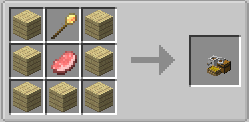
돼지기의 오두막(SwineHerders's Hut) 아이템을 만들어 설치한 후, 원하는 돼지치기를 고르고 돼지치기의 오두막 아이템을 오른쪽 클릭하여 건축 옵션(Build Options)에 들어가 건물 짓기(Build Building)를 클릭하고 재료를 넣어주면 설치된다. 돼지치기의 오두막은 여러 채를 짓거나, 레벨업을 해 건물을 확장하거나, 다른 위치로 이동시켜 재건축을 할수 있다.
돼지치기의 오두막을 짓고 돼지치기를 채용하면 도끼와 감자/당근을 달라고 한다. 감자/당근으로는 돼지를 번식시키며 도끼로는 불어난 돼지를 도축한다. 우리 하나당 번식에 필요한 성체 돼지 두 마리 이외에는 도축한다.
1.12.2 기준 동물 마니아 모드와 불완전 호환된다. 동물 마니아 모드에서는 돼지에 암수 구분이 있고 새끼는 성체가 되고 나서야 성별이 결정되는데, 개척자 모드의 돼지치기는 돼지 우리 하나당 돼지 성체 두 마리만 있으면 나머지 돼지를 도축하고 감자/당근으로 번식시키려 하므로, 번식으로 개체를 늘리는 기능은 활용할 수 없고 고기를 얻는 기능만 살릴 수 있다.
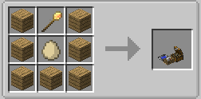
닭치기의 오두막(ChickenHerders's Hut) 아이템을 만들어 설치한 후, 원하는 닭치기를 고르고 닭치기의 오두막 아이템을 오른쪽 클릭하여 건축 옵션(Build Options)에 들어가 건물 짓기(Build Building)를 클릭하고 재료를 넣어주면 설치된다. 닭치기의 오두막은 여러 채를 짓거나, 레벨업을 해 건물을 확장하거나, 다른 위치로 이동시켜 재건축을 할수 있다.
닭치기의 오두막을 짓고 닭치기를 채용하면 도끼와 씨앗을 달라고 한다. 씨앗으로는 닭을 번식시키며 도끼로는 불어난 닭을 도축한다. 우리 하나당 번식에 필요한 성체 닭 두 마리 이외에는 도축한다.
1.12.2 기준 동물 마니아 모드와 불완전 호환된다. 동물 마니아 모드에서는 닭에 암수 구분이 있고 새끼는 성체가 되고 나서야 성별이 결정되는데, 개척자 모드의 닭치기는 닭 우리 하나당 닭 성체 두 마리만 있으면 나머지 닭를 도축하고 씨앗으로 번식시키려 하므로, 번식으로 개체를 늘리는 기능은 활용할 수 없고 고기와 달걀, 깃털를 얻는 기능만 살릴 수 있다.
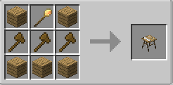
목공소(Sawmill) 아이템을 만들어 설치한 후, 원하는 목수를 고르고 목공소 아이템을 오른쪽 클릭하여 건축 옵션(Build Options)에 들어가 건물 짓기(Build Building)를 클릭하고 재료를 넣어주면 설치된다. 목공소는 여러 채를 짓거나, 레벨업을 해 건물을 확장하거나, 다른 위치로 이동시켜 재건축을 할수 있다.
목공소를 짓고 목수를 채용하면, 목수에게 나무가 재료가 되는 9칸짜리 아이템 제조법을 학습시켜 재료를 만들어 공급하게 할 수 있다. 계단, 울타리, 울타리 문, 반블럭, 제작대, 문 같은 것을 만들 수 있다.
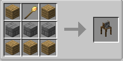
석공소(Stonemason) 아이템을 만들어 설치한 후, 원하는 석수를 고르고 석공소 아이템을 오른쪽 클릭하여 건축 옵션(Build Options)에 들어가 건물 짓기(Build Building)를 클릭하고 재료를 넣어주면 설치된다. 석공소는 여러 채를 짓거나, 레벨업을 해 건물을 확장하거나, 다른 위치로 이동시켜 재건축을 할수 있다.
석공소를 짓고 석수를 채용하면, 석수에게 돌이나 조약돌이 재료가 되는 9칸짜리 아이템 제조법을 학습시켜 재료를 만들어 공급하게 할 수 있다. 계단, 담장, 반블럭, 화로 같은 것을 만들 수 있다.
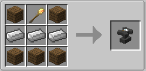
대장간(Blacksmith) 아이템을 만들어 설치한 후, 원하는 대장장이를 고르고 대장간 아이템을 오른쪽 클릭하여 건축 옵션(Build Options)에 들어가 건물 짓기(Build Building)를 클릭하고 재료를 넣어주면 설치된다. 대장간은 여러 채를 짓거나, 레벨업을 해 건물을 확장하거나, 다른 위치로 이동시켜 재건축을 할수 있다.
대장간을 짓고 대장장이를 채용하면, 대장장이에게 나무, 돌, 철, 다이아가 재료가 되는 9칸짜리 아이템 제조법을 학습시켜 도구를 만들어 공급하게 할 수 있다. 곡괭이, 도끼, 삽, 괭이, 칼, 방어구 같은 것을 만들 수 있다.
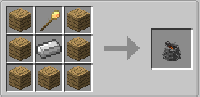
제련소(Smeltery) 아이템을 만들어 설치한 후, 원하는 제련사를 고르고 제련소 아이템을 오른쪽 클릭하여 건축 옵션(Build Options)에 들어가 건물 짓기(Build Building)를 클릭하고 재료를 넣어주면 설치된다. 제련소는 여러 채를 짓거나, 레벨업을 해 건물을 확장하거나, 다른 위치로 이동시켜 재건축을 할수 있다.
제련소를 짓고 제련사를 채용하면, 제련사가 화덕에 넣을 연료를 요구하는데, 제련소 아이템을 오른쪽 클릭하고 우측 상단 보라색 화살표를 눌러 연료(Fuel)목록에서 원하는 연료를 ON으로 바꾼 후, 해당 연료를 보관함에 넣으면 된다. 석탄을 그냥 넣는 것보다 석탄블록으로 만들어 넣는 것이 효율이 좋다. 제련사는 광물 블럭을 화덕에 제련하여 광석으로 바꿔준다.
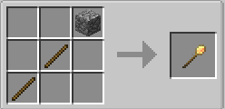
건축 도구(building tool)로 짓고 싶은 건축물의 청사진을 미리 맵에 구현해 볼 수 있다.(건물 청사진을 인벤에 갖고 있는 상태여야 한다) 건축 도구를 오른손에 들고 땅을 오른쪽 클릭한 후, 화면 상단의 건축옵션에서 원하는 건축 스타일을 선택한다.9
그리고 건물의 높낮이와 위치 및 방향을 설정한다. 보면 건물 청사진이 땅에 한두블럭 묻혀있는 줄 모르고 그냥 지었다가 반지하가 되는 경우가 종종 있는데 항상 +를 눌러서 건물과 땅의 수평이 잘 맞춰졌는지 확인하고 짓는 것이 좋다. 건물의 입구와 입구에 붙은 계단을 기준으로 하면 된다.
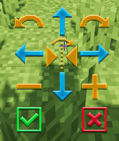
| 건물의 높낮이 | |
| 건물의 위치 | |
| 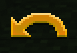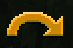 | 건물 회전 |
| 맵에서 청사진 취소 | |
| 건물 짓기 |
건물 아이템을 설치하면 건물 범위만큼 울타리가 쳐진다. 건물 아이템을 오른쪽 클릭한 후, 건축 옵션(Build Option)을 누르고 건물 건축(Build Building)을 누르면 건축가가 건물을 짓기 시작하므로, 필요한 재료를 조달해 주면 된다. 건축가를 오른쪽 클릭해 보면 작업에 필요한 재료를 요구하는데, 그 재료들을 건축가의 보관함에 넣어주거나 건축가의 오두막 보관함에 넣어두면 된다. 필요한 재료를 편하게 넣고 싶으면 그 재료를 인벤에 가진 채로 건물 아이템을 오른쪽 클릭한 후 위쪽의 보라색 휘어진 화살표를 클릭하면 나오는 아이템 리스트 오른쪽에 있는 아이템 넣기 버튼을 클릭하면 된다. 필요한 재료가 있으면 건축가의 머리 위에 느낌표가 뜨니 가끔 확인해 주거나, 보관함에 삽, 곡괭이, 도끼와 같은 재료를 미리 넣어두자. 조약돌과 나무, 횃불은 어느 건축물에든 많이 쓰이므로 미리 넣어두면 편하다. npc에게 4칸짜리 조합법을 알려주어 npc가 스스로 필요한 아이템을 조합해 사용할 수 있게 할 수도 있다.
몇몇 쉐이더와 충돌 문제가 있다. 특정 건물 청사진이 번쩍거리는데 다른 쉐이더를 사용하나 쉐이더를 잠시 해제하고 지은 뒤 다시 쉐이더를 사용하면 된다.
이따끔 npc가 지형에 갇혀 길을 못 찾고 뱅뱅 도는 경우가 종종 있는데 편한 도보를 깔아 주어도 꾸역꾸역 험난하고 협소한 곳으로 가는 경우가 있다. 좌표상의 최단거리로 가려는 것이기 때문에 그런 때는 그 npc가 가려는 험난한 길을 울타리로 둘러 막거나 2칸 이상 높여두고 내가 만들어 둔 길만 뚫어놓으면 된다. 마찬가지로 계단의 경우에도 너무 길고 높게 설치하면 헤메기 때문에 꽈배기 모양처럼 감아올라가는 모양보단 단순한 에스컬레이터 형식으로 만드는 것이 낫다. 가끔 계단 아래가 비어있을 경우 밑에서 점프를 뛰고 있을 때도 있는데 계단 밑을 울타리나 블럭으로 막으면 된다.
어떤 정착자 npc가 보이지 않는 경우가 있는데 스킨 파일 문제인 것 같다. 마을회관 건물 앞에 용암함정을 파두고 그 정착자를 호출하면(마을에 살고 있는 정착자를 전부 호출하는 버튼과 혼동하지 않도록 조심하고 정확히 그 주민만) 용암함정에 쏙 빠져 죽고 눈에 보이는 새로운 주민이 태어난다.
건축한 건물 아이템을 실수로 부쉈을 경우 그 건축물 자리에 건물을 그대로 겹쳐 짓는게 아니라 아예 철거하고 그 위치에 다른 건물을 짓는 것이 좋다. 커맨드가 겹치기 때문인지 고용인을 바꿀 수도 없게 되고 에러 문구가 떠서 일을 시킬 수도 없게 된다.